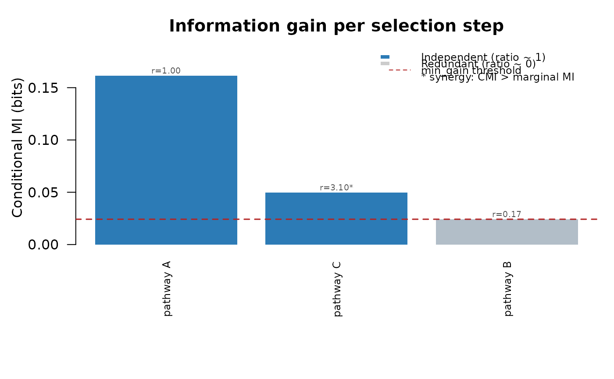

R/run_redundancy_selection.R
run_redundancy_selection.RdAddresses a fundamental limitation of enrichment analysis: when many pathways are nominally significant, most apparent signal is redundant- the same genes appearing in multiple overlapping sets. Standard approaches (Jaccard clustering, representative selection, ridge penalisation) either discard pathways arbitrarily or produce coefficients that are difficult to interpret biologically.
run_redundancy_selection(
gene_list,
gene_sets,
universe,
initial_scores = NULL,
min_gain = NULL,
fraction = 0.15,
n_perm_gain = 200L,
max_pathways = 20L,
min_size = 5L,
max_size = Inf,
seed = NULL
)Character vector of query gene symbols.
Named list of character vectors defining gene set membership.
Character vector of background genes.
Optional named numeric vector of pre-computed
marginal MI scores (e.g. info_bits from
run_info_enrichment()). Names must match names(gene_sets).
Missing entries are computed internally.
NULL (default, auto-select) or a positive numeric.
Minimum conditional MI in bits required to select a pathway. See the
min_gain selection section.
Numeric in (0, 1). Controls the relevance component of
auto min_gain: a pathway must contribute at least this fraction
of the leading signal. Default 0.15. Ignored when min_gain
is supplied explicitly.
Integer. Permutations for auto min_gain noise
floor. Default 200L. Ignored when min_gain is supplied.
Integer. Hard cap on selected pathways. Default
20L.
Integer. Minimum gene set size after universe intersection.
Default 5L.
Integer. Maximum gene set size. Default Inf.
Optional integer passed to set.seed().
A data frame with one row per selected pathway in selection order,
or a zero-row data frame if nothing exceeds min_gain. Columns:
stepSelection order (1 = first selected).
pathwayPathway name.
set_sizeMembers after universe intersection.
marginal_miUnconditional I(gene_list ; pathway) in bits.
conditional_miI(gene_list ; pathway | union of
previously selected) in bits. Equals marginal_mi at step 1.
redundancy_ratioconditional_mi / marginal_mi.
Near 1: pathway is independent of all prior selections. Near 0:
pathway is redundant. Values > 1 indicate synergy (see Details).
cumulative_bitsRunning total of conditional_mi.
Interpretable as total unique information explained by the selected
set.
This function builds a minimal non-redundant set by greedy forward
selection on conditional mutual information (CMI). At each step, the
pathway contributing the most new information about the gene list,
given all previously selected pathways,is chosen. Selection stops when
no remaining pathway exceeds min_gain bits.
The redundancy_ratio column (conditional_mi / marginal_mi)
is the primary interpretive output: a value near 1 means the pathway's
signal is independent of all previously selected sets; a value near 0
means its signal is entirely explained by earlier selections.
Compute marginal MI I(gene_list ; pathway_j) for all pathways.
Select the pathway with the highest marginal MI as S1.
For all remaining pathways, compute I(gene_list ; pathway_j | union(S1, ..., St)), where the conditioning set is binary (in/out of the gene union of all selected pathways so far).
Select the pathway with the highest CMI exceeding min_gain.
Repeat until the gain criterion fails or max_pathways is
reached.
Collapsing selected pathways into a binary union variable (rather than conditioning on each separately) keeps CMI estimation tractable and avoids sparse-cell problems as the selected set grows.
When a large pathway is selected first, the z=0 stratum (genes outside
it) may be enriched for signal from small independent pathways, causing
their CMI to exceed their marginal MI (redundancy_ratio > 1).
This is mathematically valid (synergy) but inflated relative to the true
independent contribution. Conservative min_size filtering and a
well-defined min_gain threshold mitigate this in practice.
When min_gain = NULL (default), the threshold is auto-selected as
the maximum of:
A noise floor: 95th percentile of max marginal MI under gene-list permutation, ensures selection is above chance.
A relevance threshold: fraction * max(marginal MI)
ensures each selected pathway contributes a meaningful fraction of
the dominant signal.
The relevance threshold is the binding constraint in most real datasets.
Adjust fraction (default 0.15) to control stringency.
Pass the info_bits column from run_info_enrichment() as
initial_scores to skip redundant marginal MI computation.
Paninski, L. (2003). Estimation of entropy and mutual information. Neural Computation, 15(6), 1191–1253.
run_info_enrichment() for marginal MI enrichment scores,
run_info_assoc() for sample-level phenotype association,
plot_gains() to visualise the selection profile.
set.seed(1)
universe <- paste0("G", 1:1000)
# A and B are near-redundant (55/60 gene overlap)
# C is an independent signal; D is noise
gene_sets <- list(
pathway_A = universe[1:60],
pathway_B = c(universe[1:55], sample(universe[61:1000], 5)),
pathway_C = universe[500:560],
pathway_D = universe[200:230]
)
# gene_list is enriched in A/B region and C, not elsewhere
gene_list <- unique(c(
sample(universe[1:60], 45),
sample(universe[500:560], 15),
sample(universe[61:499], 3)
))
# Step 1: marginal enrichment: A, B, and C all look significant
mi_res <- run_info_enrichment(
gene_list = gene_list,
gene_sets = gene_sets,
universe = universe,
n_perm = 500,
seed = 1
)
print(mi_res[, c("set", "set_size", "info_bits", "emp_p", "padj_emp")])
#> set set_size info_bits emp_p padj_emp
#> 1 pathway_A 60 0.16140548 0.001996008 0.002661344
#> 2 pathway_B 60 0.14728539 0.001996008 0.002661344
#> 3 pathway_C 61 0.01606196 0.001996008 0.002661344
#> 4 pathway_D 31 0.00295788 0.161676647 0.161676647
# Step 2: greedy selection: B is revealed as redundant with A
sel <- run_redundancy_selection(
gene_list = gene_list,
gene_sets = gene_sets,
universe = universe,
initial_scores = setNames(mi_res$info_bits, mi_res$set),
seed = 1
)
#> Auto-selected min_gain = 0.02421 bits (noise floor = 0.00374, relevance threshold = 0.02421 [15% of leading MI]).
#> Stopping at step 4: best conditional gain = 0.00016 bits < min_gain = 0.02421.
print(sel)
#> step pathway set_size marginal_mi conditional_mi redundancy_ratio
#> pathway_A 1 pathway_A 60 0.16140548 0.16140548 1.0000000
#> pathway_C 2 pathway_C 61 0.01606196 0.04972285 3.0956892
#> pathway_B 3 pathway_B 60 0.14728539 0.02434921 0.1653199
#> cumulative_bits
#> pathway_A 0.1614055
#> pathway_C 0.2111283
#> pathway_B 0.2354775
# Fraction of total marginal signal captured by selected pathways
cat(sprintf(
"%d pathways capture %.0f%% of total marginal MI\n",
nrow(sel),
100 * max(sel$cumulative_bits) / sum(mi_res$info_bits)
))
#> 3 pathways capture 72% of total marginal MI
plot_gains(sel, min_gain = attr(sel, "min_gain"))
